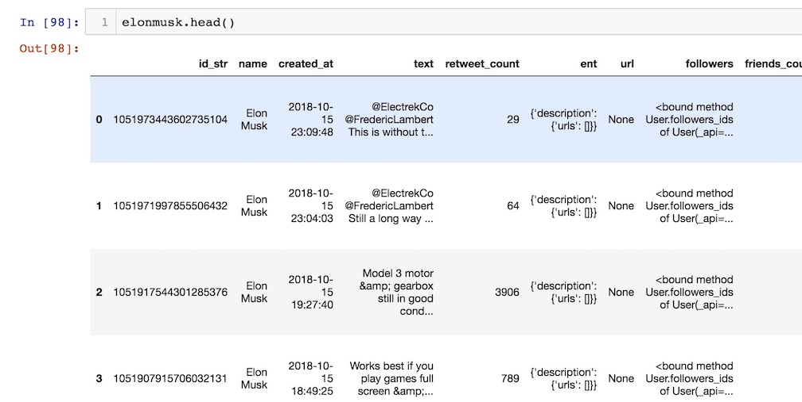

This is the first blog post in a series on web scraping, NLP and topic modeling. We will be accessing the Twitter API with the Tweepy package and then turning the data into a Pandas DataFrame.
When you look at the state of Natural Language Processing today there is a lot of buzz surrounding context aware products and services. In many ways NLP with its uses in language aware and responsive products has become the most ubiquitous aspect of “AI” in our modern life. We talk to chatbots online when we shop, tell a digital assistant what topic we are calling about and tell Alexa to play Despacito. While these things seem relatively new to the consumer a lot of the basics behind NLP are not at all new. The fact that the turing test was proposed by Alan Turing in 1950 gives us a sense of how long the idea of a contextually aware program that can respond has been around. The real difference that has accelerated the field today is the abundance of computational power and the maturation of Machine Learning as a discipline.
Another interesting thing happening today is the huge prevalence of Social Media. Never before has there been so much information being self reported by humans in text form and as we saw in the 2016 election this information can have a lot of power. As you will see shortly there is also a certain amount of sensitivity involved in accessing information from Twitter or any other Social Media site. This post is not going to discuss the implications this kind of information but it is worth mentioning it before we look at how to access the Twitter API using the Tweepy.
The first thing to do before getting started is to have a Twitter Developer account. You will need to set up OAuthorization as described here. You need to write a 300 word description of your intended use and make an "app" following the directions. Here is another explaination of this process. Once you have the correct authorization keys you can input them into these varibles.
Using this function we can take a Twitter username and turn it into a dataframe.
Let’s look at Elon Musk’s Tweets.
The output:
Now looking at the .head() of the dataframe 
Next we take this data and do some sentiment amalysis!